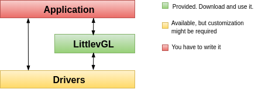

System overview¶

Application Your application which creates the GUI and handles the specific tasks.
LVGL The graphics library itself. Your application can communicate with the library to create a GUI. It contains a HAL (Hardware Abstraction Layer) interface to register your display and input device drivers.
Driver Besides your specific drivers, it contains functions to drive your display, optionally to a GPU and to read the touchpad or buttons.
Depending on the MCU, there are two typical hardware set-ups. One with built-in LCD/TFT driver periphery and another without it. In both cases, a frame buffer will be required to store the current image of the screen.
MCU with TFT/LCD driver If your MCU has a TFT/LCD driver periphery then you can connect a display directly via RGB interface. In this case, the frame buffer can be in the internal RAM (if the MCU has enough RAM) or in the external RAM (if the MCU has a memory interface).
External display controller If the MCU doesn't have TFT/LCD driver interface then an external display controller (E.g. SSD1963, SSD1306, ILI9341) has to be used. In this case, the MCU can communicate with the display controller via Parallel port, SPI or sometimes I2C. The frame buffer is usually located in the display controller which saves a lot of RAM for the MCU.